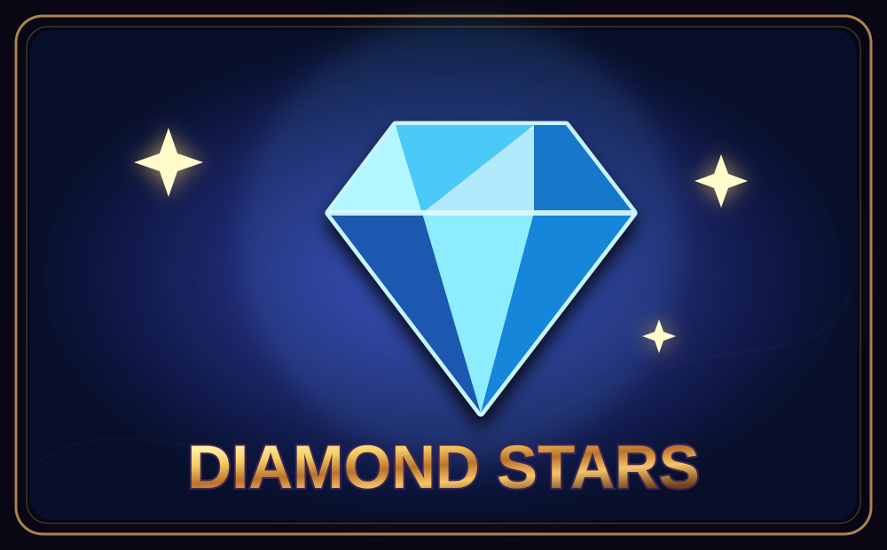
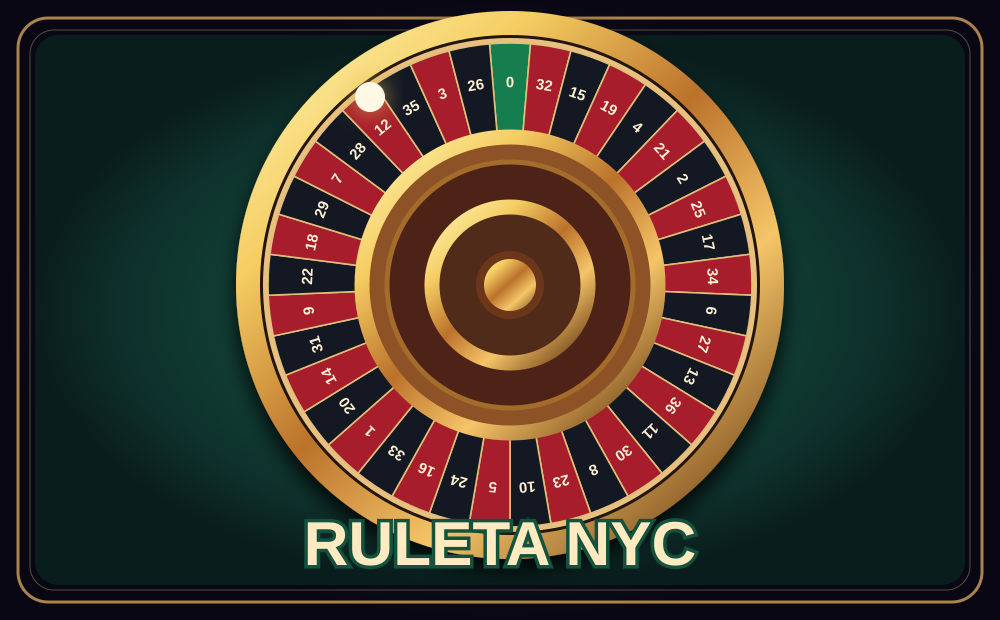
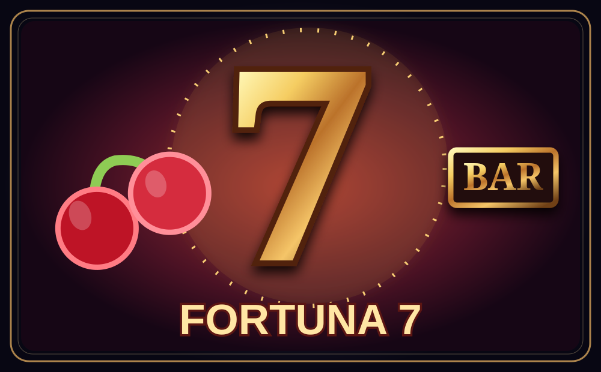

DISPONIBLE
Campana Link
Tragamonedas · 5 rodillos · 10 líneas
Bienvenido · Todo listo para jugar
Explora cuatro juegos recreativos: dos tragamonedas modernas, una clásica de sietes y la ruleta europea. Todos comparten créditos de demostración.
Solo para demostración
Tragamonedas · 5 rodillos · 10 líneas
El lobby y el juego guardan tus preferencias y puntos ficticios en este dispositivo. No hay registro bancario, retiro de premios ni conexión a un casino comercial.
4 resultados
Tragamonedas · 5 rodillos · 10 líneas

DISPONIBLETragamonedas de cinco rodillos, comodines y giros gratis.

DISPONIBLERueda 3D de KARMA (Three.js): bola real, plenos, semiplenos, calles y cuadros.

DISPONIBLETragamonedas clásica con tres rodillos, sietes y frutas.
No hay juegos que coincidan con la búsqueda.
Casino NYC incluye cuatro juegos de demostración independientes: Campana Link, Diamond Stars, Fortuna 7 y Ruleta KARMA. Todos comparten créditos ficticios en este navegador.
Las cantidades son valores de demostración del juego Campana Link, no jackpots en vivo ni dinero retirables. Se desbloquean dentro del bono de campanas según sus reglas.
No necesitas registrarte ni dar información personal para esta demostración.
Aún no has marcado juegos como favoritos.
En Inicio toca JUGAR AHORA, o en Juegos selecciona cualquiera de los cuatro juegos. Las tragamonedas tienen rodillos animados, apuestas ficticias y controles de autojuego.
La lupa filtra los cuatro juegos del catálogo. El corazón ♡ guarda tus juegos elegidos localmente para que puedas encontrarlos rápidamente.
Los créditos son totalmente ficticios, visibles tanto en el lobby como en los cuatro juegos. Se guardan en tu propio navegador. Puedes recibir 100 créditos de prueba una vez cada 24 horas en ese dispositivo.
Hay cuatro juegos: Campana Link, Diamond Stars, Fortuna 7 y Ruleta KARMA. Puedes abrirlos directamente desde el catálogo y todos comparten los créditos ficticios guardados en este navegador.
No. No existen pagos, apuestas monetarias, cuentas reales, premios canjeables ni retiros. Esta versión es solamente recreativa.
Abre el sitio publicado en Safari o Chrome. En iPhone, usa Compartir → Añadir a pantalla de inicio. Se necesita que el sitio esté publicado correctamente en GitHub Pages.